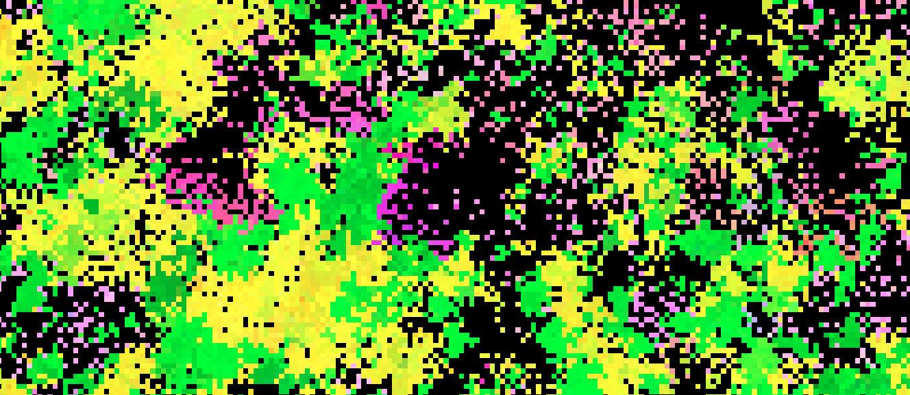

I haven't published in a while since I got a job making websites. I suppose writing and coding partly lost their escapist factor, being able to make a living out of it. But this week, I visited a hackerspace and it inspired me to log my creativity again.
A hackerspace is where people play with technology the way it should be. There's something amazing about hobbyist passion, free from life's obligations. According to their site,The hacker culture is a subculture of individuals who enjoy the intellectual challenge of creatively overcoming the limitations of current technologies to achieve novel and clever outcomes. I enjoyed the extremely nerdy vibes, and I mean that in the best way. We played pong and snake on a handmade table with a 32*32 LED light grid built into it, hooked up to NES controllers. They have a microscope, 3D printer, woodturning kit, self-checkout bar, and lots of hacky projects, all of which are somewhat work in progress. They got enthousiastic about AI technology and the demoscene. And it's an open non-profit without entry fees. Anyhow, seeing the low-res LED grid table made me wonder if I could run my life simulation on it. And so I revisited the project and noticed some problems.
Previous article on the life simulation
The Evomatrix project on Github

The main thing I wanted to fix was the speed. It was quite unoptimized. I started with the graphics. I used Python 2.7 with TKinter in the first version of evomatrix. This time I used python3 and pygame for the visuals. The graphics code runs a lot faster now, but admittedly, I simplified it and the surface only use as many pixels as there are cells.
To keep track of performance, I used the time.perf_counter to clock time passed at different points of execution. The results were quite unexpected. I thought I would lose a lot of time with updating values in the 2D-arrays, but that was not the case at all. The performance gains from improving the random generation were also minimaL. Lookups of values, and if-statements, were more costly. And my biggest surprise, using numpy for all the 2D-arrays (or matrixes, as they are called in numpy) slowed the simulation considerably, instead of making things run faster.
Numpy has great functions to help with matrix calculations, and since my simulation uses 5 matrixes which are checked and updated constantly, I thought I could make some serious gains here. But what numpy is good with are calculations on big chunks of data in those matrixes. Multiplying entire matrixes, transforming them and so forth. What I am doing instead is checking every cell one by one. And iterating over a numpy matrix is actually slower than iterating over a default python matrix. Rewriting the code to make all the operations on a larger scale was no use because the costly operations like moving have to be handled on a cell-by-cell basis. I also thought I could save computing time by storing every value as an 8-bit unsigned integer (dtype=uint8). But for regular calculations, this special numpy data type is implicitly converted to a data type python can do regular operations on. This inefficiency can largely be relieved by making the conversion explicit, for example int(grid[x,y]). But in the end, all this unpacking and repacking was only making matters worse. I ditched numpy again and ended up not far from where I started. I suppose that if I really want a fast-running simulation, I should try a more low-level language. For now, I get 100 FPS on a 32x32 grid, which means around 100.000 cells are updated and redrawn every second, and that's fine.
Some other changes I made were more succesful, and made the evolution more logical and interesting. For example, one big issue with he previous version was that individuals would live forever, staying in their cells if they don't move, and evolution would stagnate. I then had to introduce disruption, random deaths, to solve this. In the new version, if individuals have enough energy to reproduce but no free space to put their offspring, they will produce offspring on top of another cell, replacing it. This way, generations are replaced at a regular pace and faster growing organisms can still outcompete slower growing organisms without direct fighting.
One result of this is that after an initial period of allopatric speciation followed by a bunch of short-lived atypical species, there is now a clear rock-paper-scissor mechanic with 3 stable species. There are plants (bright green) which sit still and grow fast, overgrowing other plants. There are herbivores (orange to purple), who move and eat the green plants, burning through them like a fire. And then there are yellow plants, which can defend themselves against the herbivores but which get overgrown by green plants.
There are two more varations. I don't dare call them seperate species, even though they take up a different niche and have different genes, because they die off and re-evolve on ecological (not evolutionary) timescales. So phylogenetically, they are just temporary variations of other species. They include plants in open spaces, which evolve teal hues (more blue = faster) to colonize the available open space. And then there are the more brightly colored herbivores, who can eat plants extremely fast and win fights, but only survive as long as they are in the middle of a forest. Once the forest is eaten, they wither away quickly and the paler, slower but more long-lived herbivores carry on the herbivore genes. In smaller resolutions, herbivores sometimes go extinct, but they always re-evolve in the belly of the resulting forest. It's interesting that when herbivores go extinct, yellow and teal plants go extinct as well. This is logical, because there is no more benefit for moving plants or plants with defense mechanisms.
I'm happy with this new ecological balance because I think it shows the maximum, meaningful biological diversity with only 3 single-purpose genes. And with some luck, I can find a way to run it on the LED coffee table at the hackerspace.
{% endraw %} {% endblock %}